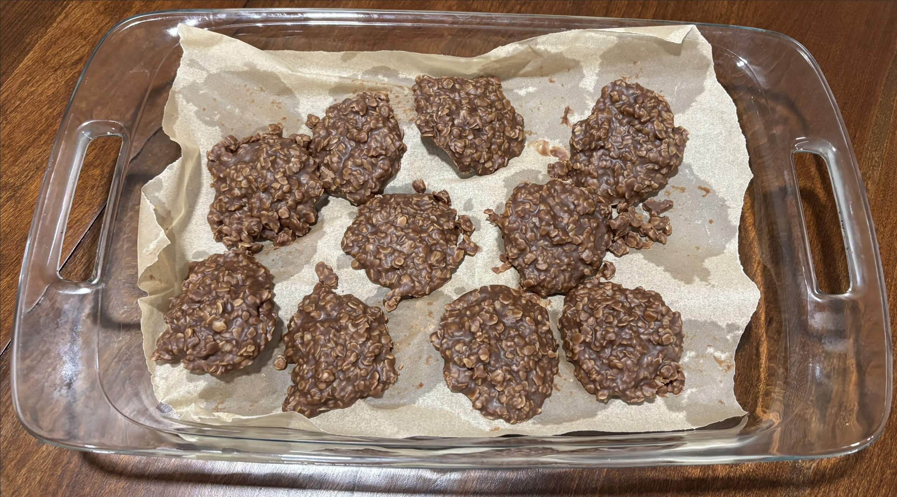

Home
No Bake Cookies

Servings 30 cookies
Ingredients
- ½ cup unsalted butter 113 grams (1 stick)
- 2 cups granulated sugar 400 grams
- ½ cup milk 114 grams, at least 2%
- ¼ cup unsweetened cocoa powder 21 grams
- ⅛ teaspoon kosher salt
- ½ cup creamy peanut butter 135 grams
- 2 teaspoons pure vanilla extract 8 grams
- ⅛ teaspoon ground cinnamon optional
- 3 cups quick oats 267 grams
Steps
- Line 2 large baking sheets with parchment paper; set aside.
- Add the butter, sugar, milk, cocoa powder, and salt to a large saucepan and bring to a rolling boil. Boil for 1 minute, then remove from the heat.
- Stir in the peanut butter, vanilla, and cinnamon (if using); mix until incorporated.
- Add the oats and mix will.
- Working quickly, drop by tablespoon onto the prepared baking sheets and let the cookies completely set/cool. If desired, flatten the mounds slightly with a spoon.
- Store in an airtight container.
Tips
- Be sure to line your baking trays with parchment so that the cookies are easily removed.
- The milk mixture only needs to boil for one minute. Don't boil it any longer or it can affect the texture of the cookies.
- Mix the dough really well, everything should be incorporated and you can easily do this by hand.
- The cookies will take about 30 minutes to fully set, so be patient!
- Store chocolate no bake cookies in an airtight container in the refrigerator for up to 2 weeks.